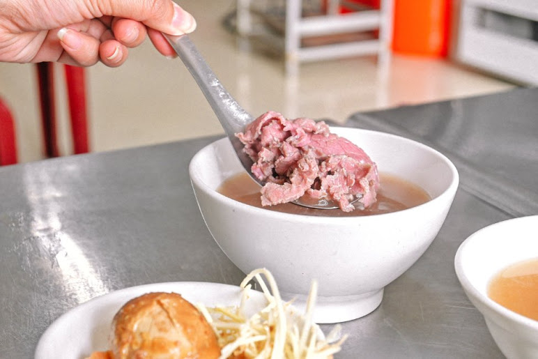
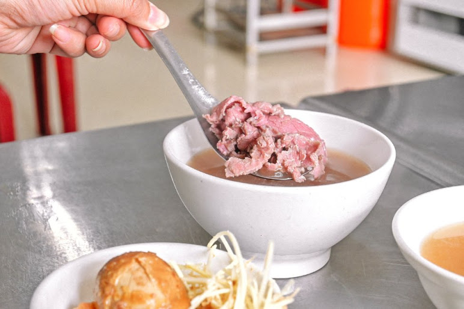
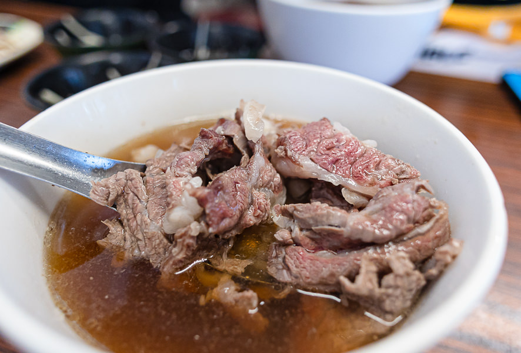
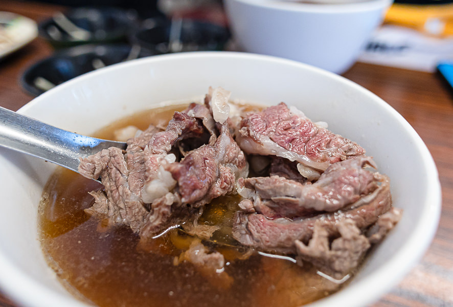

| 台南牛肉湯 |
切成薄片的粉嫩嫩牛肉片用滾沸高湯往碗裡沖下，瞬間熟成的好味道，不用沾醬就很美味，在麻豆其森牛肉湯，只要低消120元就可以肉燥飯+滷蛋免費無限吃到飽，太佛心了! 但要注意的是營業時間都是從早上五點到下午兩點售完為止。
 
| 店家名稱：其森牛肉湯
地址：台南市麻豆區興民街1號 電話：06-5717112 營業時間：05：00-14：00 必吃招牌:牛肉湯搭配肉燥飯和滷蛋吃到飽 |
位在台南佳里的順福土產牛肉湯，雖然離台南市區有一小段路，但為了美食，一切都值得，順福土產牛肉湯用餐環境乾淨，溫體牛凌晨直送，肉品優秀湯又清甜，老饕們讚不絕口，老闆相當客氣，不忙的時候也很健談，看得出老闆對於湯頭的堅持跟肉品的用心！
 
| 店家名稱：其森牛肉湯
地址：台南市佳里區延平路324號 電話：06-7212845 營業時間：02：30-17：00 必吃招牌:牛肉湯+肉燥飯搭配滑蛋牛肉 |
整體來說阿財牛肉湯在牛肉口感和湯頭方面都還不錯，在地人推薦的五花肉牛肉湯真的可以喝喝看，應該會比一般的牛肉湯要來的好喝一些。但如果不喜歡帶筋或帶肥肉的人，可以點一般的牛肉湯就好，一樣不錯喝。大推阿財牛肉湯的沾醬，目前吃過台南牛肉湯有附沾醬裡面最好吃的!


| 店家名稱：阿財牛肉湯
地址：台南市安平區古堡街5號 電話：06-2261252 營業時間：11:30–22:00 必吃招牌:菜單上沒有的”五花肉牛肉湯” |
| ☝️top |